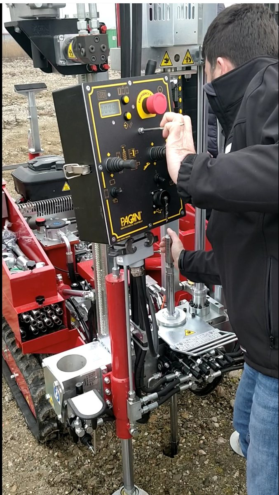
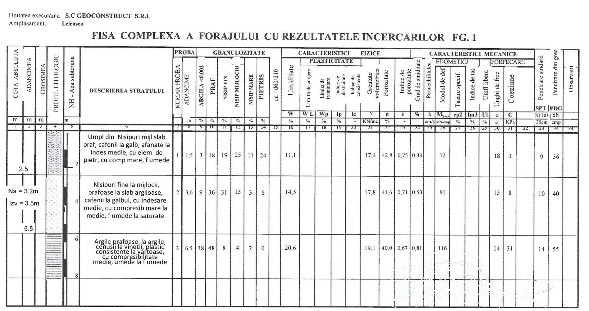

Știm ce e sub fundația ta.
Studii geotehnice cu laborator propriu atestat, expertize și verificări tehnice A1 și Af, proiecte de rezistență și de infrastructură, ridicări topografice. Din 2002, în toată țara.
Patru specialități, un singur birou
Ridicarea topografică, studiul geotehnic și proiectul se fac în aceeași firmă, așa că datele trec de la teren la planșă fără pierderi.

Studii geotehnice
Foraje, penetrări CPT și SPT, încercări în laboratorul propriu de grad II.
Detalii →
Expertizare
Expertize și verificări tehnice, cu încercări nedistructive pe structura existentă.
Detalii →
Proiectare
Structuri de rezistență și proiecte complexe de infrastructură, calculate prin metoda elementului finit.
Detalii →
Topografie
Ridicări cu stații totale și GPS de precizie, planuri de situație și documentații cadastrale.
Detalii →Fișa complexă a forajului
Pentru fiecare foraj întocmim fișa cu profilul litologic și rezultatele încercărilor din laborator. Ea stă la baza recomandărilor de fundare din studiul geotehnic.

Straturile întâlnite, grosimea lor și nivelul apei la data forării.
Granulozitate, umiditate, plasticitate, greutate volumetrică, porozitate.
Modulul edometric, unghiul de frecare internă, coeziunea și rezultatele penetrărilor SPT.
Fiecare structură, calculată în model 3D
Analize făcute de inginerii noștri pe proiecte reale: deplasări sub acțiunea seismică, eforturi axiale în stâlpi, momente încovoietoare în grinzi.


Din portofoliu
Beneficiari


Spune-ne ce construiești și unde
Îți spunem ce studii, avize și proiecte îți trebuie. Prima discuție e gratuită.